Acknowledgment: This guide has been taken from one written by Daehyoek Kim and Jeongyoon Moon with minor modifications.
You will do your assignments for CS 356 using CloudLab. CloudLab is a research facility that provides bare-metal access and control over a substantial set of computing, storage, and networking resources. If you haven’t worked in CloudLab before, you need to register a CloudLab account. This guide walks you through the CloudLab registration process and shows you how to start an experiment in CloudLab. You should submit a per-group report that shows you have successfully followed the process. Most importantly, it introduces our policies on using CloudLab that will be enforced throughout the semester.
Using Cloudlab is optional if you have access to a Linux machine, for example through your personal computer or a VM and are confident that you can debug any issues. However we recommend you still register for CloudLab since some optional assignments are more fun if you have access to a remote machine.
NOTE: $ [shell_command] indicates to execute [shell_command] in your terminal.
Join Existing Project and enter utcs356.$ brew install openssh$ sudo apt-get install openssh-client openssh-serverssh-keygen$ ssh-keygen -t rsa -b 4096~/.ssh/id_rsa. ~/.ssh/id_rsa is your private key and ~/.ssh/id_rsa.pub is your public key (upload this during the account registration).~/foo/mykey) to save your private key when the prompt asks for it. ~/foo/mykey.pub would be the public key in this case. Tools>MobaKeyGen
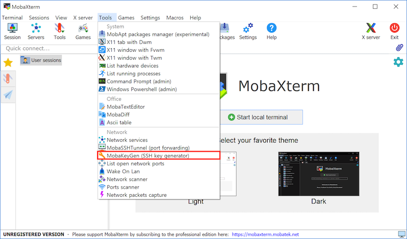Generate. You can use the below parameters (RSA with 4096bits) or other parameters you want.
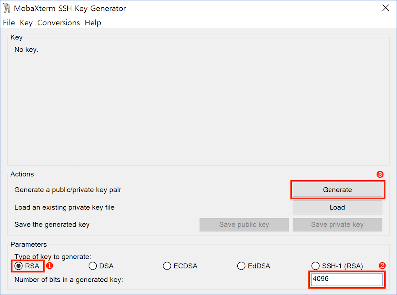Key passphrase before saving the keys.Start/Join Project and type utcs356 into the ProjectID field.Once you complete the above steps, the instructor or TA will approve your request to join the project so that you can start an experiment.
An experiment in CloudLab means the instantiation of a profile. You can think of a profile as a pre-configured VM image that includes OS and necessary setup. An experiment lasts only for the reserved hours, and all the changes you made on top of the profile will be discarded. Make sure that you use a private git repository to save your code.
Experiments tab in the upper left corner. Then select Start Experiment, moving to the profile selection panel.
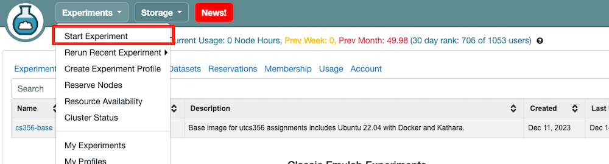Change Profile.
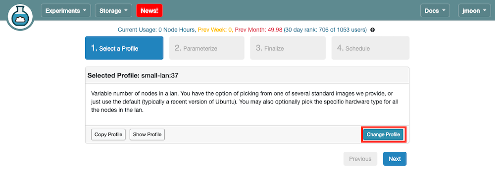cs356-base profile in the utcs356 project. With this profile, you can launch one machine with the Ubuntu 22.04.2 LTS image with Docker and Kathara additionally installed.
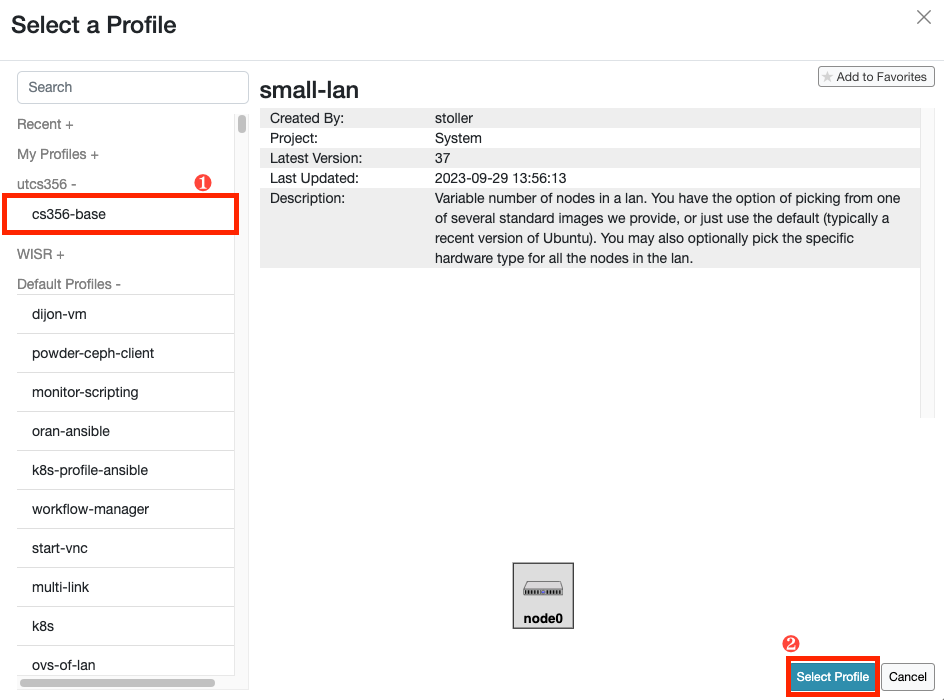Next to move to the next panel (Parameterize).
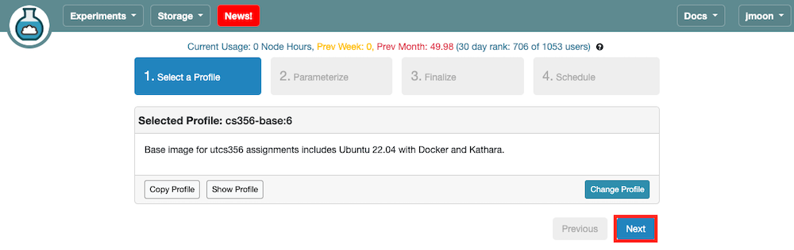Next to move to the next panel (Finalize). You don’t need to parameterize an experiment unless explicitly mentioned.
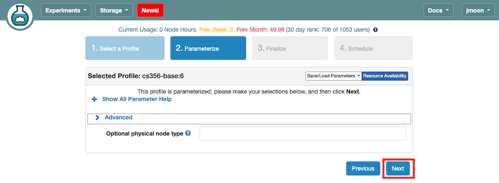CSLogin1-CSLogin2 (CSLogin1 is the cs username of Member 1), select utcs356 as Project, and your assignment group as Group (You will be invited. If you’re not yet invited, Group might not appear. You’re ok to proceed without selecting Group for this assignment). You need to specify from which cluster you want to start your experiment. Please select the Wisconsin cluster. If it fails, then try another cluster. Click Next to move to the next panel (Schedule).
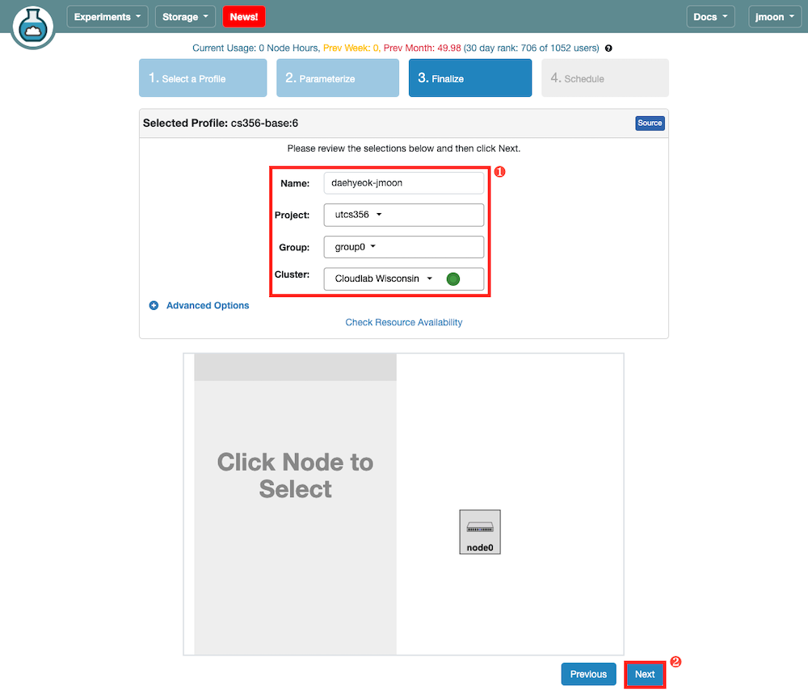Start on date/time field. Once your experiment is ready you will receive a notification email.
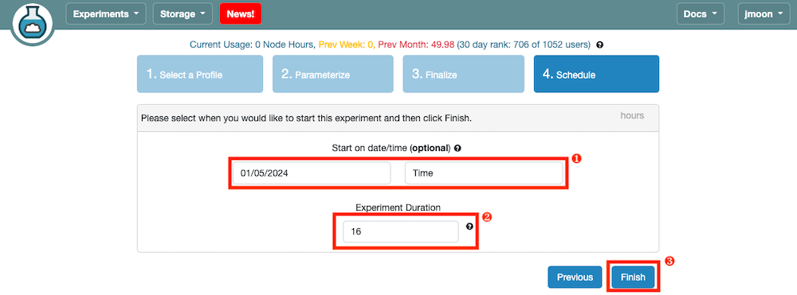You can navigate to your CloudLab user dashboard to see your list of active experiments. You will move to a webpage describing project details by clicking on the experiment name.
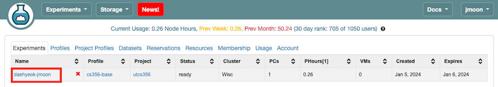
Click the List View on that page, which opens a table where you can obtain the SSH login command (ssh <cloudlab_id>@<cloudlab_host>) to log in to your machine.
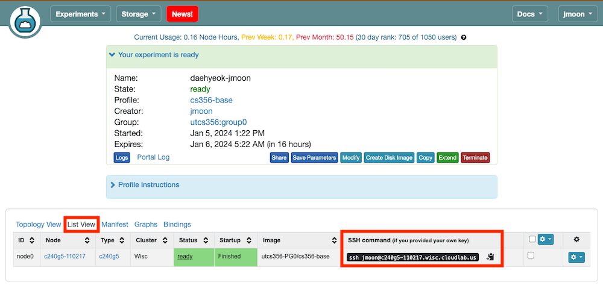
$ ssh <cloudlab_id>@<cloudlab_host>Session.<cloudlab_host> on Remote host, select the Specify username checkbox, and type <cloudlab_id>. Select the X11-Forwarding and Use private key checkboxes. Click the blue file icon and select the private key file you saved in the previous step. Launch an SSH session by clicking on OK.If you find yourself stuck on any of the above steps, don’t hesitate to post a question to Ed!
Check for the number of CPU physical cores and logical cores (threads) available (use $ lshw -class cpu or $ lscpu) and memory available (use $ free -h) on the node you reserved.
Report the available resources in your report. If you choose not to use CloudLab and are confident in your ability to debug any issues that come up in your own Linux setup, just write a sentence saying that.
Your report should be a pdf file named assign0_groupX.pdf, where X is your group number. Your report must include your group’s number, members, and their EIDs. Please submit one report per group.
utcs356 project, you have permission to create new experiments in the default group in addition to the group you are invited to. Stick to your own group and use naming formats as mentioned. For more information related to this, please refer to https://deanofstudents.utexas.edu/conduct/academicintegrity.php